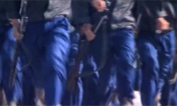
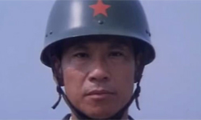
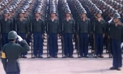
The Big Parade was the second collaboration between Chen Kaige and Zhang Yimou. It is the story of a tough drill sergeant and his raw recruits. Often seen as an exploration of the relationship of collectivism versus individualism. At the time, however, some western critics, took the film at face value, seeing it as propagandist and describing it as a "boot camp" film. The New York Times, in particular, derided the film as a "Recruiting Poster for Collective Action".
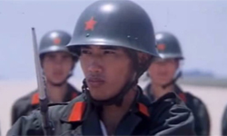
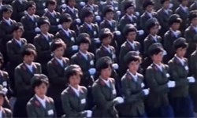
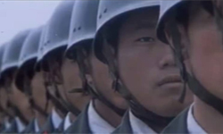
A battle-toughened Chinese drill sergeant is assigned to whip a ragtag group of raw recruits into a perfect marching unit. The soldiers in this film are getting ready to participate in a Beijing celebration of China's National Day. At first the diverse assortment of recruits find they have one thing in common - their hatred of their harsh leader, but in time they come to respect him and realise that his strictness is a form of genuine caring and that he is not about to let anyone be denied the great honour of participating in the parade. Still it is not an easy road for anyone as they all are forced to re-examine their notions of individuality and of working in a group in contemporary China.
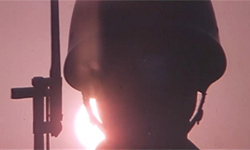
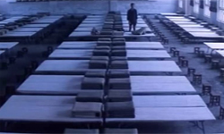
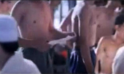
If critics felt that this was merely China's newest propaganda film, this was due in part to the heavy hand of the Chinese Film Bureau. Originally, Chen had not shot an actual parade to conclude his film, only obscure silhouettes of soldiers against a sunset, an artistic decision that shocked "both army and censors". Even forcing the director to insert more traditional imagery, censors nevertheless withdrew the film from the 1987 Cannes Film Festival without explanation.
Despite its apparent support of collectivism, some scholars have noted a more ambiguous subtext to the film, suggesting that the film's imagery is less simplistic than such early reviews suggested. As one scholar wrote, "Chen explores the relationship between the collective and the individual, but wants to leave the relationship ambiguous". Another Chinese film scholar, Zhang Yingjin, saw a subtext of criticism of the Chinese notion of its own nationhood, even as the film's rhetoric veers towards the propagandist.
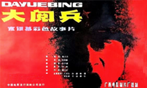
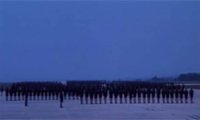
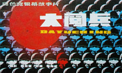
One aspect of the film - in which Zhang Yimou himself played an uncredited role - that is not in dispute, however, is Zhang Yimou's photography. The New York Times wrote on the film's American screening in 1988 that it was the "photography that lifts The Big Parade out of the rudely-fashioned trench of its story."
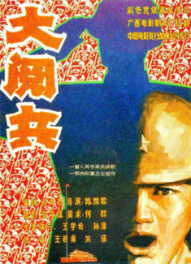
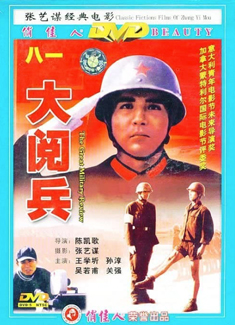
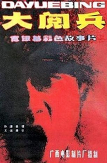